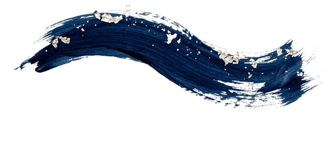
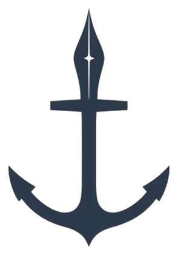

FAQ & qui suis-je
Mais qu'est-ce donc qu'un stratège créatif ?
Je m'appelle Mikaël. Je construis des ponts entre la visibilité en ligne (SEO/GEO), l'écriture qui persuade et le design d'interface qui clarifie — pour aider une structure à être trouvée, lue et choisie.
J'interviens en freelance, basé à Monaco & dans le Grand Sud, en présentiel ou à distance selon le projet — sur des missions ponctuelles comme sur des accompagnements plus longs : refontes de sites, stratégies éditoriales, optimisation SEO/GEO, parcours utilisateurs.
Cette page rassemble les questions qu'on me pose le plus souvent sur ma manière de travailler. Si la vôtre n'y figure pas, vous pouvez me contacter directement.

Le métier, en clair
Les mots du métier, avec clarté
Qu'est-ce qu'une stratégie de contenu ?
Qu'est-ce que le SEO — et le GEO ?
Que signifient « content marketing » et « stratège créatif » ?
UX, UI, web design : quelle différence ?
Positionnement
Pour qui, et pourquoi
Quelle est votre valeur ajoutée par rapport à une agence ?
Travaillez-vous uniquement avec des institutions culturelles ?
Travaillez-vous aussi bien avec de petites structures qu'avec de grandes organisations ?
Intervenez-vous à distance ?
Collaborer
Missions & tarifs
Quelles prestations proposez-vous ?
Quatre formats, du diagnostic ciblé à l'accompagnement au long cours :
- Audit ponctuel — un diagnostic livré en une fois sur le pilier qui freine vos résultats, avec les correctifs classés par impact et par effort.
- Accompagnement éditorial — ligne éditoriale, calendrier, et production régulière d'articles, de newsletters et de publications.
- Refonte UX / site — de l'architecture des contenus aux maquettes, jusqu'à la mise en ligne.
- Stratégie complète — les trois piliers menés ensemble, lorsque plusieurs canaux et plusieurs équipes doivent avancer dans le même sens.
Le détail de chaque format, livrables et déroulé, se trouve dans la section Prestations de la page d'accueil.